Alerts Redesign
OVERVIEW
This case study explores the redesign of the Alerts component on the Services Australia website to improve the design, better handle multiple notifications, and develop usage guidelines.
Note: consent to share this information for the portfolio case study has been obtained.
MY ROLE
UI/UX Design
Ideation
TEAM
Senior Designer
Data Analyst
UX Researchers
Developers
Team Director
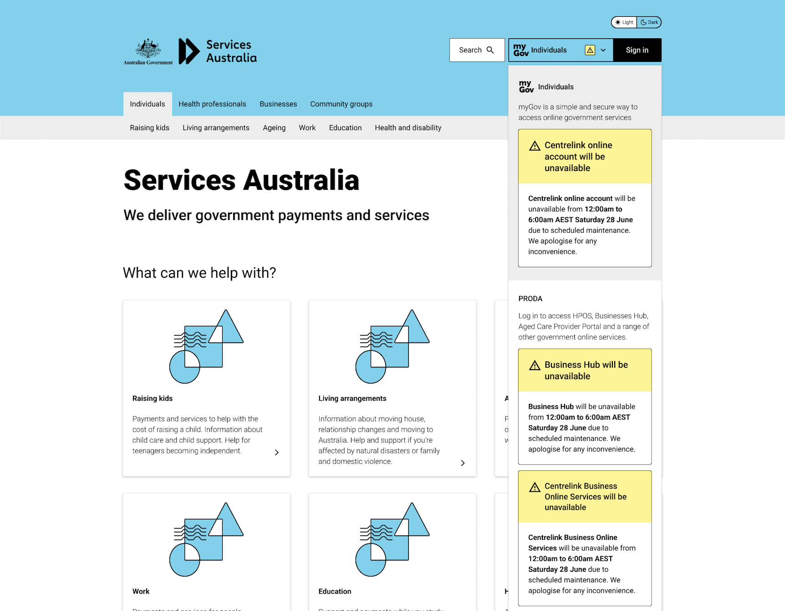
Sign-in
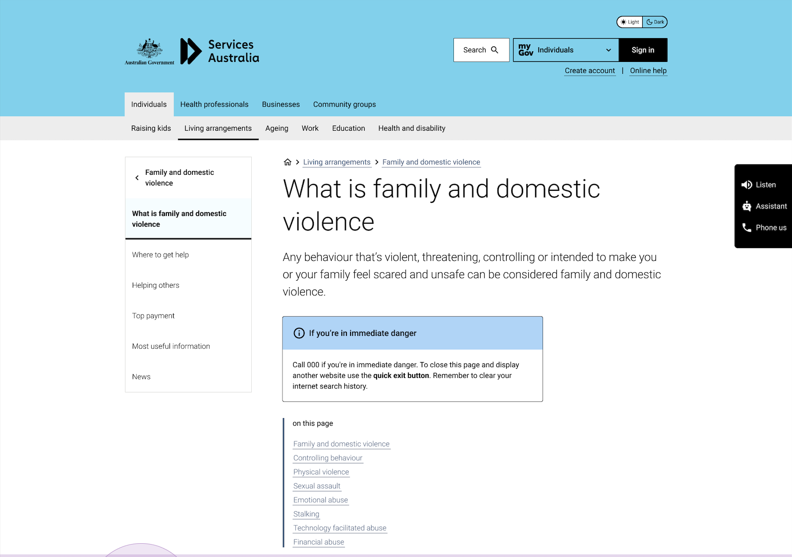
Single alert

Stacked alerts
The problem
Alerts play a critical role in surfacing time-sensitive or high-importance messages such as service disruptions, disaster payments, or eligibility updates on the Services Australia website. However, internal feedback and user observations indicate that current alert designs do not always capture attention effectively or support quick comprehension. Issues like stacked alerts consuming valuable screen space and banner blindness can reduce their impact.
Key pain points
-

Banner blindness prevents users from noticing the alert.
-
Designs need to be consistent across different styles
-

Stacked alerts occupy valuable screen real estate
Baseline:
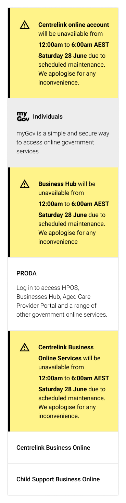
Sign-in
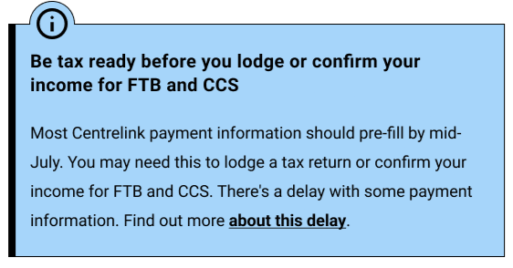
In page
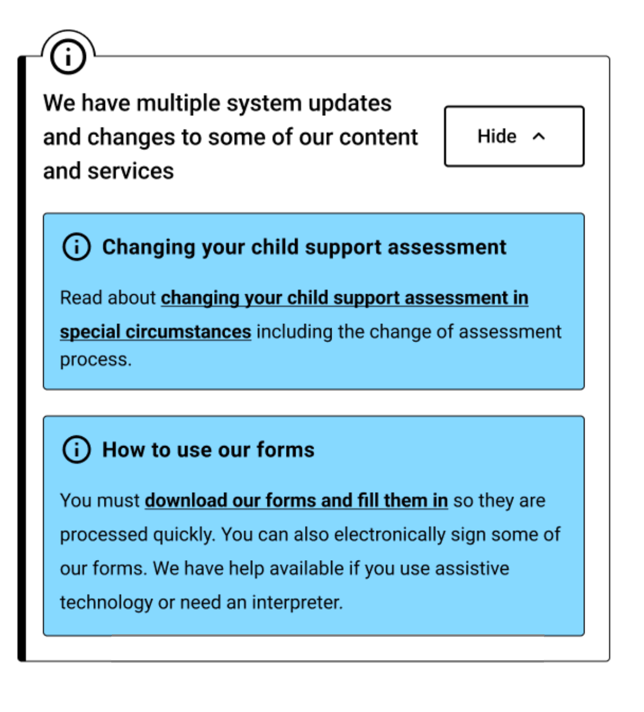
Stacked alerts
How might we redesign the alerts to handle multiple notifications efficiently, improve consistency across styles and capture user attention?
The design process

Ideate
Design
We revisited the design with the primary goal to retain as much consistency as possible across different alert styles. The designs also had to accommodate different screen sizes.
Another aspect I considered was how the design would look like with the maximum number of alerts. Despite the need to preserve screen real estate, alerts must remain visible when the user first loads the large and then provide the option to hide or dismiss them.
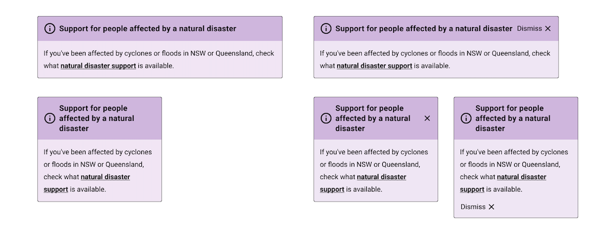
Alert design exploration
Colour
As part of ensuring the alerts became more prominent on the page to combat banner blindness, we experimented with potential colours and how they would translate from light mode to dark mode.
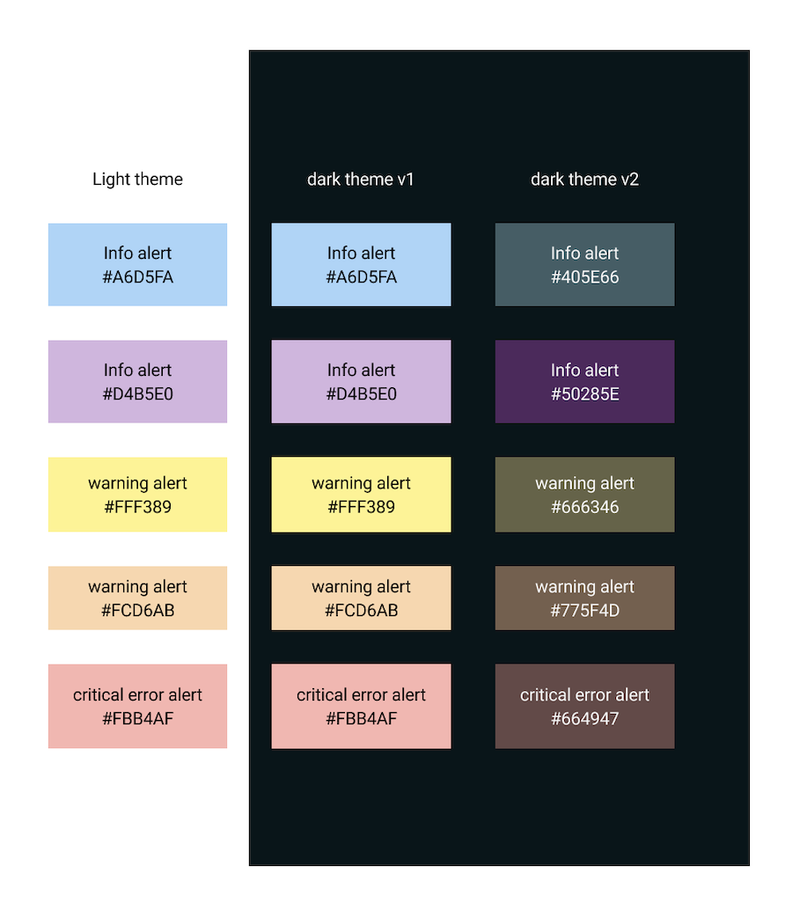
Alert colour palettes
Icons
This was something we experimented with to support better comprehension and urgency was appropriately communicated
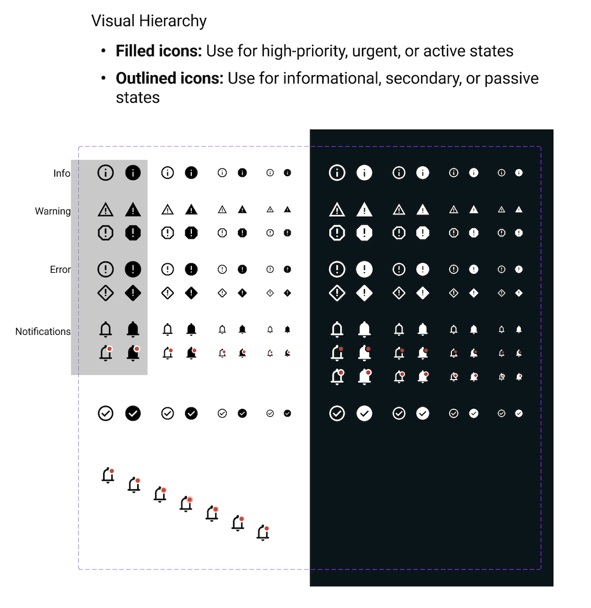
Alert icons
Prototyping
After proposing several new concepts and ideas, the designs went through multiple approval rounds and testing plans were drafted.
Overall insights
-
•
No longer accommodate banner designs (which was above the header and filled the entire screen) due to lack of use.
-
•
Limit number of alerts displayed at once. Prototyping this highlighted that it would cause overwhelm rather than incentive to action them .
-
•
Split testing into 3 phases: design, colours, and icons. This is to ensure preference data is not distorted by other design elements.
Concepts for testing
Colours
Yellow vs orange
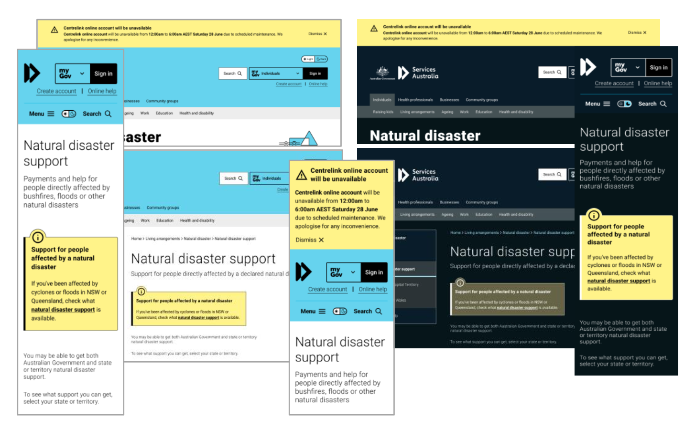
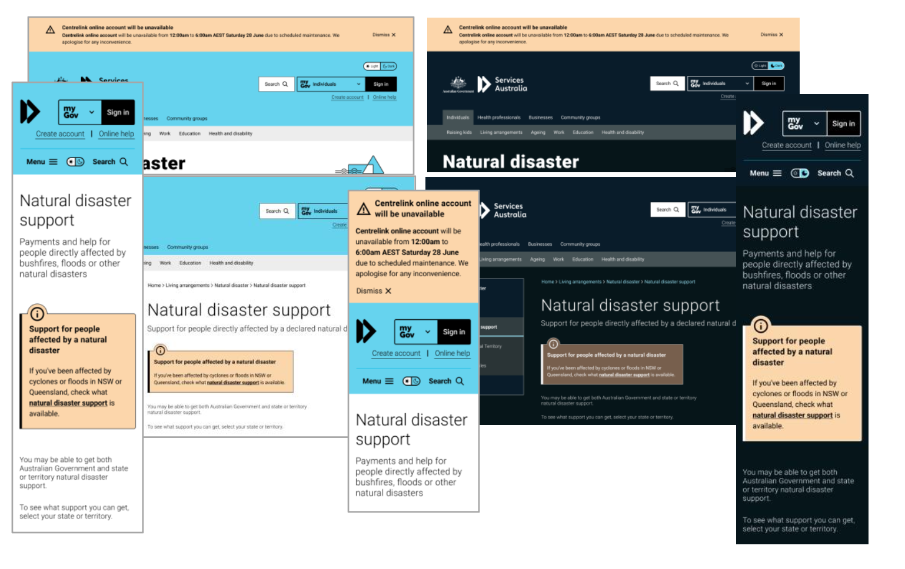
Blue vs purple
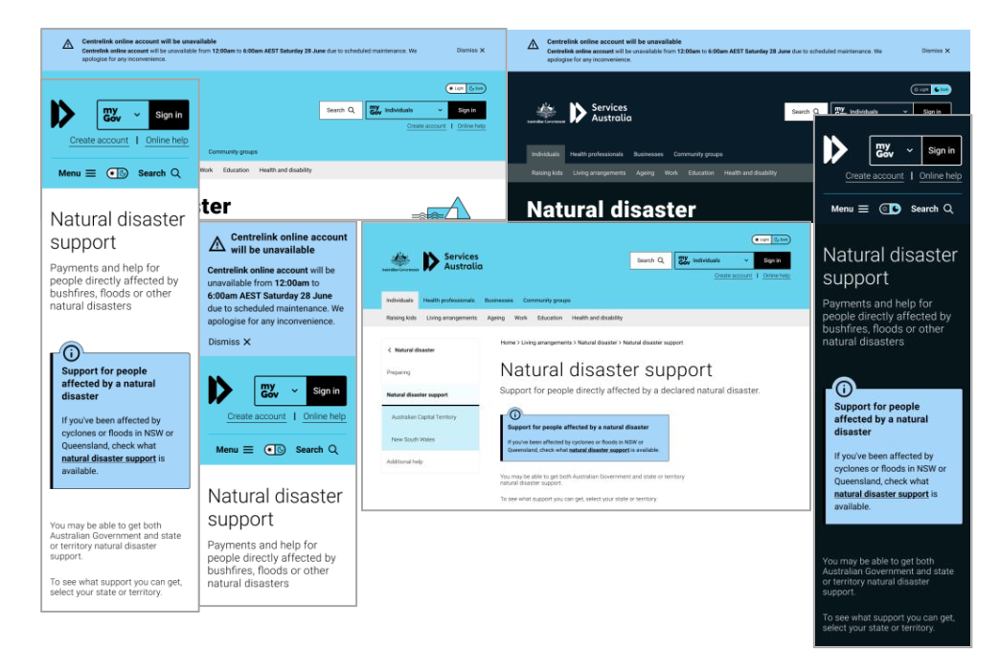
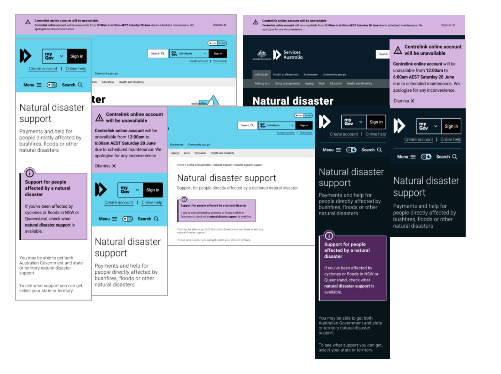
Icons
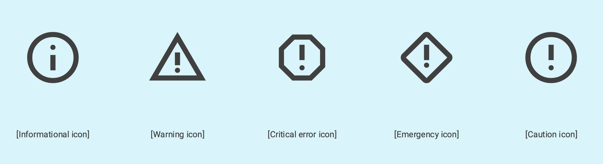
Design
Baseline
Sign-in
In page
Stacked alerts
MyGov baseline
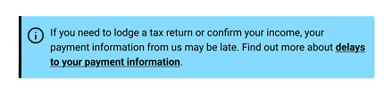
Banner
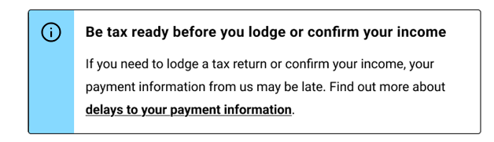
In-page
New concept
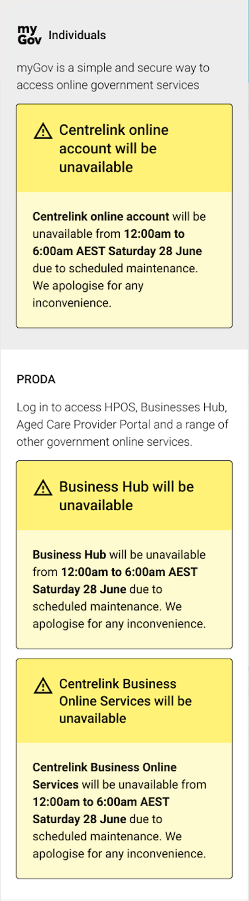
Sign-in
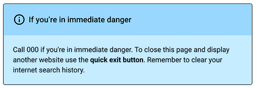
In-page
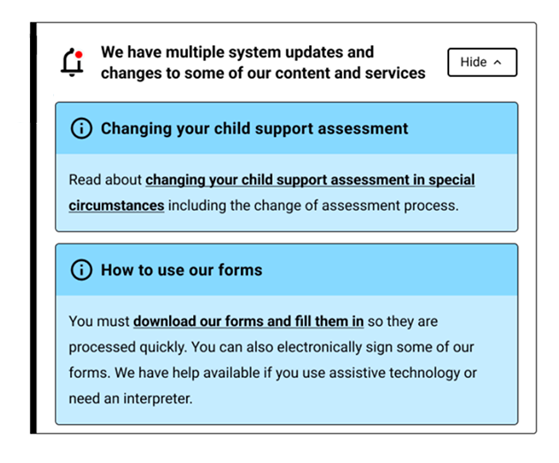
Stacked
Testing
Part 1:Colours
Purpose
To identify colours that reliably draw attention to genuinely important information without causing unnecessary alarm or alert fatigue, and assess whether one standard can work across themes, devices, and user preferences.
| Detail | Description |
|---|---|
| Method | Unmoderated online testing |
| Participants | 50 |
| Format | Preference selection and rationale |
| Prototypes | Blue vs purple, yellow vs orange, and baseline dark mode vs proposed concept |
Findings
Colour preference
-
•
Yellow preferred over orange, perceived as more urgent and drew more attention.
-
•
Purple preferred over blue, perceived as more urgent and drew more attention.
Swatch preference
-
•
Users preferred swatches that were bright and visually appealing.
-
•
Red-Yellow-Blue (RYB) and Red-Yellow-Purple (RYP) were top-rated colour schemes.
Dark mode preference
-
•
Users consistently rated baseline dark mode colours as less urgent because they appeared "too subtle" and blended into the dark mode background.
-
•
Users rated the new enhanced dark mode colours significantly higher because they "actually pop against the dark background" and "look intentional rather than washed out. This highlights a preference for higher contrast colours
Part 2: Icons
Purpose
To test recognition and understanding of five system alert icons, and to create a consistent visual language for system alerts on the Services Australia website.
| Detail | Description |
|---|---|
| Method | Unmoderated online testing |
| Participants | 25 |
| Format | Icon recognition survey and preference testing |
| Prototypes | Icon images |
Findings
| Icon | Effectivness ratings | User recognition |
|---|---|---|
|
Information Icon |
4.84/5 | Excellent recognition: Users clearly understand this is an information icon |
|
Warning Icon |
4.68/5 | Strong performance: Good recognition with some variation in interpretation |
|
Critical Error Icon |
3.08/5 | Moderate recognition: Mixed interpretations suggest this icon needs refinement |
|
Emergency Icon |
2.20/5 | Poor recognition: Users struggle to identify this as an emergency icon |
|
Caution Icon |
2.92/5 | Confusing to users: Many interpret this as Informational rather than 'Caution' |
Part 3: Design preference
Purpose
To determine whether the redesigned patterns improves visibility, readability, and trust.
| Detail | Description |
|---|---|
| Method | Unmoderated online testing |
| Participants | 120 (15 per test) |
| Format | Desktop and mobile |
| Prototypes | Figma prototype |
Findings
Alert banner design preference: myGov Baseline
-
•
Most consistent with the messaging across mobile and desktop.
-
•
Clear comprehension from multiple participants.
-
•
Understood call-to-action and deadline concept.
Sign-in pattern preference
Most participants preferred the new concept over the baseline, with desktop users expressing a greater preference for it. Participants who chose the baseline design appreciated its straightforward single-colour scheme and bold appearance
Multiple alert patterns and show/hide preference
-
•
The new alert design concepts were strongly preferred by participants compared to the baseline designs.
-
•
Users found the new concepts easier to navigate, especially on mobile devices, where both designs performed well, but the new approach outperformed all alternatives.
-
•
The new concept was more intuitive and visually effective, leading to higher satisfaction and preference among users.
Info vs notification icon
-
•
Most users preferred the 'bell' notification icon over the information icon. They saw the 'bell' notification icon as a familiar symbol, especially from mobile apps and social media. In contrast, the information icon felt too generic and wasn't seen as suitable for alerts.
-
•
Participants saw the ‘red dot’ on the bell icon as a clear cue that something new needed attention.
Next steps
Colours
-
•
Use yellow for high-priority alerts in both themes.
-
•
Despite purple outperforming blue in light mode, implement baseline blue given its performance in dark mode for consistency.
Icons
-
•
Use informational icon for information system alerts.
-
•
Warning icon for warnings and critical errors system alerts.
-
•
Critical alert icon for emergencies system alert.
-
•
Use the outlined style for low to medium severity alerts.
-
•
Use the filled style for high and critical severity alerts.
Design preference
-
•
Use myGov alert patterns: The myGov designs performed strongly across comprehension, discoverability, noticeability, and overall user preference. Introducing these patterns will give customers a more consistent and seamless experience across both government platforms.
-
•
Use new concept for multiple alerts
-
•
Fewer alerts: User testing showed that participants preferred fewer alerts at once, as too many created overload and contributed to banner blindness.
-
•
Clear, descriptive titles for alerts: Participants preferred alerts with clear titles that could be scanned and understood more quickly.
Results and reflection
Results
The redesigned Alerts were implemented on the live Services Australia website, replacing the old design.
The new design intends to more efficiently preserves screen real estate and better captures user attention by avoiding banner blindness. I do not have the metrics from the live site to support this.
What I learned
Testing elements of a components separately
When changing multiple parts of a component, it is important to test them in isolation to ensure that preference results are not influenced by other factors.
Form follows function
When designing a component, it is critical to consider its function. For the alerts, the visual design had to accommodate urgency, multiple notifications, different screen sizes, and varying levels of severity.
Working on this project taught me that design constraints are shaped not only by project outcomes and scope, but also by what you're designing.